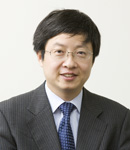
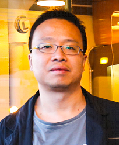
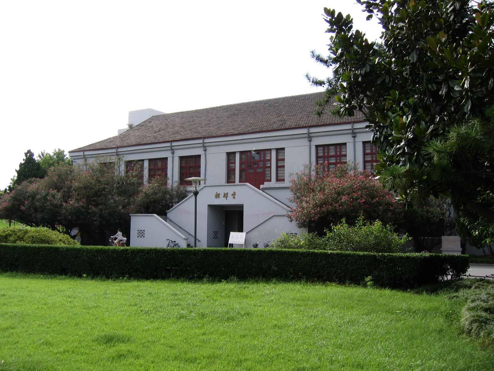

Welcome to SCAM'17!
The aim of the International Working Conference on Source
Code Analysis & Manipulation (SCAM) is to bring together
researchers and practitioners working on theory,
techniques and applications which concern analysis and/or
manipulation of the source code of computer systems. While
much attention in the wider software engineering community
is properly directed towards other aspects of systems
development and evolution, such as specification, design
and requirements engineering, it is the source code that
contains the only precise description of the behaviour of
the system. The analysis and manipulation of source code
thus remains a pressing concern.
SCAM 2017 will be held at Crowne Plaza Shanghai Fudan, a five-star hotel with InterContinental Hotels Group (IHG).
We will use WeChat for communication during the conference. Please follow the provided guide to set it up. Download the WeChat Guide
Registration is now open! Click here to register.
Please check back later for updates, and
follow us on Twitter
to keep informed.
Research Track Accepted Papers
Jinshui Wang, Xin Peng, Zhenchang Xing, Kun Fu and Wenyun Zhao.
Contextual Recommendation of Relevant Program Elements in an Interactive Feature Location ProcessDave Binkley, Nicolas Gold,
Mark Harman,
Syed Islam,
Jens Krinke and Shin Yoo.
Tree-Oriented vs. Line-Oriented Observation-Based SlicingRichárd Szalay,
Zoltán Porkoláb and Dániel Krupp.
Towards Better Symbol Resolution for C/C++ Programs: A Cluster-based SolutionGiovanni Liva, Muhammad Taimoor Khan and
Martin Pinzger.
Extracting Timed Automata from Java MethodsAbdul Ali Bangash,
Hareem Sahar and
Mirza Beg.
A Methodology for Relating Software Structure with Energy ConsumptionJordy Ruiz, Hugues Cassé and Marianne De Michiel.
Working around loops for infeasible path detection in binary programsBin Lin,
Simone Scalabrino, Andrea Mocci,
Rocco Oliveto, Gabriele Bavota and
Michele Lanza.
Investigating the Use of Code Analysis and NLP to Promote a Consistent Usage of IdentifiersMohammed Sayagh,
Zhen Dong,
Artur Andrzejak and
Bram Adams.
Does the Choice of Configuration Framework Matter for Developers?Marcelo Suzuki, Adriano de Paula, Eduardo Guerra,
Cristina Lopes and Otavio Lemos.
An Exploratory Study of Functional Redundancy in Code RepositoriesGuilherme B. de Pádua and
Weiyi Shang.
Revisiting Exception Handling Practices with Exception Flow AnalysisAlaaeddin Swidan, Alexander Serebrenik and Felienne Hermans.
How do Scratch Programmers Name Variables and Procedures?Manuel Leuenberger,
Haidar Osman,
Mohammad Ghafari and
Oscar Nierstrasz.
Harvesting the Wisdom of the Crowd to Infer Method Nullness in JavaMohammad Ghafari, Pascal Gadient and Oscar Nierstrasz.
Security Smells in AndroidMd Saidur Rahman and
Chanchal K. Roy.
On the Relationships between Stability and Bug-proneness of Code Clones: An Empirical Study
Engineering Track Accepted Papers
David Anderson and
Mark Hills. Supporting Analysis of SQL Queries in PHP AiR
Mona Nashaat, Karim Ali and James Miller. Detecting Security Vulnerabilities in Object-Oriented PHP Programs
Csaba Nagy and
Anthony Cleve. A Static Code Smell Detector for SQL Queries Embedded in Java Code
Thomas Atzenhofer and Reinhold Plösch. Automatically Adding Missing Libraries to Java Projects to Foster Better Results from Static Analysis
Program
- 9:00 - 9:15
Conference Opening
- 9:15 - 10:30
Keynote by Zhenjiang Hu
Session Chair: Coen De Roover
- 10:30 - 11:00
Coffee Break
- 11:00 - 12:30
Session 1: Program Analysis and Slicing
Session Chair: Arpad Beszedes
| Jordy Ruiz, Hugues Cassé and Marianne De Michiel |
Working around loops for infeasible path detection in binary programs |
| Guilherme B. de Pádua and Weiyi Shang |
Revisiting Exception Handling Practices with Exception Flow Analysis |
| Dave Binkley, Nicolas Gold, Mark Harman, Syed Islam, Jens Krinke and Shin Yoo |
Tree-Oriented vs. Line-Oriented Observation-Based Slicing |
- 12:30 - 13:30
Lunch
- 13:30 - 15:00
Session 2: Empirical Studies
Session Chair: Sandro Schulze
| Marcelo Suzuki, Adriano de Paula, Eduardo Guerra, Cristina Lopes and Otavio Lemos |
An Exploratory Study of Functional Redundancy in Code Repositories |
| Mohammed Sayagh, Zhen Dong, Artur Andrzejak and Bram Adams |
Does the Choice of Configuration Framework Matter for Developers? |
| Alaaeddin Swidan, Alexander Serebrenik and Felienne Hermans |
How do Scratch Programmers Name Variables and Procedures? |
- 15:00 - 15:30
Coffee Break
- 15:30 - 17:30
Session 3: Engineering Track Papers
Session Chair: Pascal Cuoq
| Thomas Atzenhofer and Reinhold Plösch |
Automatically Adding Missing Libraries to Java Projects to Foster Better Results from Static Analysis |
| Csaba Nagy and Anthony Cleve |
A Static Code Smell Detector for SQL Queries Embedded in Java Code/td>
|
| David Anderson and Mark Hills |
Supporting Analysis of SQL Queries in PHP AiR |
| Mona Nashaat, Karim Ali and James Miller |
Detecting Security Vulnerabilities in Object-Oriented PHP Programs |
- Evening
Banquet
The restaurant is: Kathleen's Waitan
The address is: Kathleen's Waitan Restaurant & Cocktails, on the bund, 200 Huangpu Lu, 4F, Shanghai
Website: http://www.kwaitan.com/index.php
Monday, September 18th, 2017
- 9:15 - 10:30
Keynote by Charles Zhang
Session Chair: Jianjun Zhao
- 10:30 - 11:00
Coffee Break
- 11:00 - 12:30
Session 4: Supporting Software Developers
Session Chair: Alexander Serebrenik
| Jinshui Wang, Xin Peng, Zhenchang Xing, Kun Fu and Wenyun Zhao |
Contextual Recommendation of Relevant Program Elements in an Interactive Feature Location Process |
| Manuel Leuenberger, Haidar Osman, Mohammad Ghafari and Oscar Nierstrasz |
Harvesting the Wisdom of the Crowd to Infer Method Nullness in Java |
| Bin Lin, Simone Scalabrino, Andrea Mocci, Rocco Oliveto, Gabriele Bavota and Michele Lanza |
Investigating the Use of Code Analysis and NLP to Promote a Consistent Usage of Identifiers |
- 12:30 - 13:30
Lunch
- 13:30 - 15:00
Session 5: Fact Extraction
Session Chair: Sibylle Schupp
| Giovanni Liva, Muhammad Taimoor Khan and Martin Pinzger |
Extracting Timed Automata from Java Methods |
| Richárd Szalay, Zoltán Porkoláb and Dániel Krupp |
Towards Better Symbol Resolution for C/C++ Programs: A Cluster-based Solution |
| Abdul Ali Bangash, Hareem Sahar and Mirza Beg |
A Methodology for Relating Software Structure with Energy Consumption |
- 15:00 - 15:30
Coffee Break
- 15:30 - 16:30
Session 6: Code Smells and Clones
Session Chair: Lei Ma
| Mohammad Ghafari, Pascal Gadient and Oscar Nierstrasz |
Security Smells in Android |
| Md Saidur Rahman and Chanchal K. Roy |
On the Relationships between Stability and Bug-proneness of Code Clones: An Empirical Study |
- 16:30 - 16:45
Conference Closing
- 16:45 - 17:30
Open Steering Committee Meeting

Keynote: Bidirectional Transformation in Practice, Zhenjiang Hu
Abstract: Bidirectional transformations, originated from the view updating
mechanism in the database community, have been attracting a lot of
attention lately, both in the programming languages community and in
the software engineering community. As bidirectional programming
languages are growing more mature, they are getting easier to use for
software engineers, more efficient, and more reliable. The strongest
argument in favor of bidirectional transformation is its ability to
provide a synchronization mechanisms between a source and a view, that
is guaranteed to be correct by construction.
This talk will focus on practical aspects of bidirectional
transformation. We will briefly review the principles of
bidirectional transformation, introduce BiGUL, a simple but powerful
language that allow users to specify their bidirectional behavior
completely, and demonstrate its practical usefulness in developing
various kinds of synchronizers including a tool that can automatically
synchronize human-friendly source codes with machine-oriented abstract
syntax trees.
Bio: Zhenjiang Hu is a full professor of National Institute of Informatics
(NII) in Japan. He received his BS and MS degrees from Shanghai Jiao
Tong University in 1988 and 1991, respectively, and PhD degree from
University of Tokyo in 1996. He was a lecturer (1997–1999) and an
associate professor (2000–2007) in University of Tokyo, before joining
NII as a full professor in 2008. His main interest is in programming
languages and software engineering in general, and functional
programming, program transformation, and bidirectional programming in
particular. He is the academic committee chair of the NII Shonan
Meetings, IFIP WG 2.1 member, and has been the steering committee
members of ICFP, Haskell, APLAS, ICMT, and BX. He is also serving on
the editorial boards of IEEE Transactions of Software Engineering,
Science of Computer Programming, and Software and Systems Modeling.

Keynote: Stop the bleeding from the heart, Charles Zhang
Abstract: Despite years of research and practice, modern static analysis techniques still cannot detect oldest and extremely well understood software bugs such as the Heartbleed, one of the most "spectacular" security flaws of the recent decade. The talk will first highlight research challenges that lead to this difficulty, followed by our latest effort, Pinpoint, in changing the conventional static analysis paradigm to address characteristics of "modern" software development. Our fused symbolic static analysis takes a holistic approach to deliver precise results scalable to millions of lines of C/C++ code. Furthermore, I will share some lessons learned in the commercialization process of Pinpoint in meeting the market requirements of Chinese software vendors.
Bio:
Charles Zhang is an Associate Professor, the director of the Cybersecurity Lab in the Department of Computer Science and Engineering, HKUST, and a co-founder of Sourcebrella Inc. His major research interest is the use of program analysis techniques to improve software reliability. He has published extensively at premium conferences and journals of programming languages and software engineering. He has served on many organizational and technical committees of international conferences. He is currently an associate editor of IEEE TSE. His research received many awards including PLDI distinguished paper award, ACM SIGSOFT Doctoral Dissertation Award, and IBM PhD fellowships. His research is supported by Research Grant Council, Innovation and Technology Fund, and grants from Microsoft and IBM. Charles obtained his Ph.D, M.Sc, and B.Sc. with honours, all from University of Toronto.
Call for Research Track Papers
The 17th IEEE International Working Conference on Source Code
Analysis and Manipulation (SCAM 2017) aims to bring together
researchers and practitioners working on theory, techniques, and
applications that concern analysis and/or manipulation of the source
code of software systems. The term "source code" refers to any fully
executable description of a software system, such as machine code,
(very) high-level languages, and executable graphical representations
of systems. The term "analysis" refers to any (semi-)automated
procedure that yields insight into source code, while "manipulation"
refers to any automated or semi-automated procedure that takes and
returns source code. While much attention in the wider software
engineering community is directed towards other aspects of systems
development and evolution, such as specification, design, and
requirements engineering, it is the source code that contains the only
precise description of the behavior of a system. Hence, the analysis
and manipulation of source code remains a pressing concern for which
SCAM 2017 solicits high quality paper submissions.
Covered Topics and Paper Formats
We welcome submission of papers that describe
original and significant work in the field of source
code analysis and manipulation. Topics of interest
include, but are not limited to:
- static and dynamic program analysis
- repository, revision and change analysis
- automated testing, abstract interpretation, verification
- program transformation, slicing and refactoring
- software quality, energy-efficiency, and security
- source-level metrics and bad smells
- clone and bug detection and prediction
- concern and feature localization and mining
- ...
SCAM explicitly solicits results from any theoretical
or technological domain that can be applied to these and
similar topics. Submitted papers should describe
original, unpublished, and significant work and must not
have been previously accepted for publication nor be
concurrently submitted for review in another journal,
book, conference, or workshop. Papers must not exceed 10
pages including all text, references, appendices and
figures and must conform to the IEEE proceedings paper
format guidelines and must be clearly marked as a
research paper. Templates in Latex and Word are
available
on IEEE's
website. All submissions must be in English.
The papers should be submitted electronically in PDF
format via EasyChair at
https://easychair.org/conferences/?conf=scam2017.
submission will be reviewed by at least three members of
the program committee, judging the paper on its novelty,
quality, importance, evaluation, and scientific
rigor. If the paper is accepted, at least one author
must attend the conference and present the paper.
SCAM 2017 also features
an engineering paper track for
papers that report on the design and implementation of
tools for source code analysis and manipulation.
Proceedings
All accepted papers will appear in the proceedings which will be
available through the IEEE Digital Library.
Special Issue
A set of the best papers from SCAM 2017 will be invited to be considered for revision, extension, and publication in a special issue of the Journal of Empirical Software Engineering (under negotiation).
Important Dates for Research Papers
Abstract Deadline: June 15, 2017Paper Deadline: June 19, 2017Notification: July 20, 2017- Camera Ready Deadline: August 3, 2017
Call for Engineering Track Papers
In addition to the research track (see
separate CFP), the
17th IEEE International Working Conference on Source Code
Analysis and Manipulation (SCAM 2017) will also feature an
Engineering Track. This track welcomes six-page papers
that report on the design and implementation of tools for
source code analysis and manipulation, as well as
libraries, infrastructure, and the real world studies
enabled by these advances. To be clear, this is not the
addition of a new track to SCAM, which will remain a two
track conference, but a significant expansion to the scope
of the tools track of previous SCAMs.
What artefacts qualify as “engineering track” material?
- tools: software (or hardware!) programs that facilitate SCAMmy activities.
- libraries: reusable API-enabled frameworks for the above.
- infrastructure: while libraries are purely software,
infrastructure can include projects that provide/facilitate access to
data and analysis.
- data: reusable datasets for other researchers
to replicated and innovate with.
- real world studies enabled by these
advances. Here the focus is on how the {tool,infrastructure, etc}
enabled the study, and not so much the study itself. Novelty of the
research question is less important than the engineering challenges
faced in the study.
A successful SCAM engineering track paper should:
- Fall under the topics mentioned for
the SCAM 2017
research track.
- Discuss engineering work artefacts that has NOT been published
before. However, previous work involving the tool, but for which the
tool was not the main contribution, is acceptable.
- Motivate the use cases (and hence the existence) of the engineering work.
- Relate the engineering project to earlier work.
- Describe the understanding gained in developing this contribution.
Optionally (and encouraged):
- Any empirical results or user feedback is welcome.
- Contain the URL of a website where the
tool/library/data etcetera can be downloaded, together
with example data and installation guidelines,
preferably but not necessarily open source.
- Contain the URL to a video demonstrating the usage
of the contribution.
Note that the submission length has a limit of six
pages, compared to the two to four pages of traditional
tool demo papers. This gives authors enough space to
discuss artefact motivation, design, and use cases in much
more detail. For example, a use case would be well
illustrated by a demo scenario with screenshots. The
papers should be submitted electronically via the
conference web site.
Each submission will be reviewed by at least three members of the
engineering track program committee. Authors of accepted papers will
be required to present their artefacts at the conference. All accepted
engineering track papers will be published in the conference
proceedings. The key criterion for acceptance is that the paper should
(a) follow the above mentioned guidelines and (b) make an original
contribution that can benefit practitioners in the field now and/or
others designing and building artefacts for source code analysis and
manipulation. The artefacts can be in an early research prototype or a
polished product ready for deployment. Papers about commercial
products are allowed, as long as the guidelines described above are
followed.
Videos and other demo material may be taken into account by
reviewers as they review the paper. However, such material will not
become part of the permanent record of the conference, so the paper
should be self contained. In order to preserve the anonymity of the
reviewers, such material should be hosted on an anonymous public
source (e.g., youtube), or made available in such a way that the tools
chair can download them once and redistribute them to reviewers.
Proceedings
All accepted papers will appear in the proceedings
which will be published by the IEEE Computer Society
Press.
Important Dates
Abstract Deadline: June 15, 2017Paper Deadline: June 19, 2017Notification: July 20, 2017- Camera Ready Deadline: August 3, 2017
Submission
Six pages IEEE format and can be submitted via
EasyChair. Please
use the IEEE templates in preparing your manuscripts:
General Co-Chairs
Research Track Co-Chairs
Engineering Track Co-Chairs
- Qianxiang Wang, Huawei Technologies
- Pascal Cuoq, TrustInSoft
Proceedings Chair
Finance Chair
Publicity Co-Chairs
Social Media Chair
Web Chair
Local Chair
Research Track
Chairs
Members
- Christoph Treude, University of Adelaide
- Ralf Huuck, Synopsys/University of New South Wales
- Vadim Zaytsev, Raincode
- Jens Nicolay, Vrije Universiteit Brussel
- Fernando Castor, Universidade Federal de Pernambuco
- Cheng Zhang, Google
- Michael Godfrey, University of Waterloo
- Abram Hindle, University of Alberta
- Bram Adams, Ecole Polytechnique de Montréal
- Nicolas Anquetil, University of Lille
- Xavier Blanc, Bordeaux University
- Sybille Schüpp, Hamburg University of Technology
- Sandro Schulze, Otto-von-Guericke Universität Magdeburg
- Ina Schaefer, Technische Universität Braunschweig
- Ralf Lämmel, University of Koblenz-Landau
- Jochen Quante, Robert Bosch GmbH
- Árpád Beszédes, University of Szeged
- Mariano Ceccato, Fondazione Bruno Kessler
- Massimiliano Di Penta, Università degli Studi del Sannio di Benevento
- Katsuro Inoue, Osaka University
- Zhenjiang Hu, National Institute of Informatics
- Naoyasu Ubayashi, Kyushu University
- Sukyoung Ryu, Korea Advanced Institute of Science and Technology
- Leon Moonen, Simula Research Laboratory
- Lei Ma, Harbin Institute of Technology
- Yuting Chen, Shanghai Jiao Tong University
- Dan Hao, Peking University
- David Lo, Singapore Management University
- Lingxiao Jiang, Singapore Management University
- Gregorio Robles, Universidad Rey Juan Carlos
- Gabriele Bavota, University of Lugano
- Alexander Serebrenik, Eindhoven University of Technology
- Mauricio Aniche, Delft University of Technology
- Federica Sarro, University College London
- Denys Poshyvanyk, The College of William and Mary
- Dave Binkley, Loyola University Maryland
- Sonia Haiduc Florida State University
- Hitesh Sajnani, Microsoft
- Neil A. Ernst, Carnegie Mellon University
- Emily Hill, Drew University
- Dawn Lawrie, Loyola University Maryland
Engineering Track
Chairs
Members
- Louis Wasserman, Google, Inc.
- Julian Dolby, IBM Thomas J. Watson Research Center
- Felienne Hermans, Delft University of Technology
- Dillon Pariente, Dassault Aviation
- Yannick Moy, AdaCore
- Csaba Nagy, Department of Software Engineering, University of Szeged
- Olga Baysal, Carleton University
- Paul Anderson, GrammaTech, Inc.
- Jochen Quante, Robert Bosch GmbH
- Shengqian Yang, Google, Inc.
- Coen De Roover, Vrije Universiteit Brussel
SCAM Steering Committee
- Leon Moonen, 2014 - 2017, 2nd term, Chair
- David Shepherd, 2014 - 2017, 1st term
- David Lo, 2015 - 2018, 1st term
- Alexander Serebrenik, 2015 - 2018, 1st term
- Dawn Lawrie, 2016 - 2019, 2nd term
- Neil Ernst, 2016 - 2019, 1st term
Shanghai, China
Shanghai is a large, modern, and vibrant city and is considered a center of innovation. It has population greater than 24 million. Shanghai is situated in the Yangtze River delta next to the East China Sea.
As one of the largest cities in Asia, Shanghai has rich cultural relics. You can not only experience a modern trip including the Bund, Xintiandi, the Oriental Pearl TV Tower and World Financial Center, but also explore an ancient journey by visiting the Yuyuan Garden, Jade Buddha Temple and Zhujiajiao Ancient Town. Nearby Suzhou and Hangzhou, you can easily visit some ancient water towns in Jiangsu and Zhejiang Provinces from Shanghai (a detailed travel guide can be found here).

SCAM'17 will take place at the Crowne Plaza Shanghai Fudan, a five-star hotel with InterContinental Hotels Group (IHG) next to the presteigous Fudan University. Fudan University is ranked as one of the top universities in the world. It has a high-level research faculty of over 2,600 full-time teachers and researchers, including 1,350 professors and associate professors.